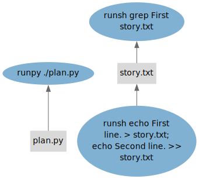
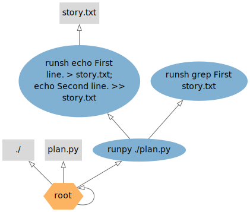

Dependencies¶
This tutorial demonstrates how StepUp tracks dependencies.
Example¶
Example source files: docs/getting_started/dependencies/
The following plan.py defines two steps, with the second making use of the output from the first.
#!/usr/bin/env python3
from stepup.core.api import graph, runsh
runsh("echo First line. > ${out}; echo Second line. >> ${out}", out="story.txt")
runsh("grep First ${inp}", inp="story.txt")
graph("graph")
The placeholders ${inp} and ${out} are replaced by the inp and out keyword arguments.
(This happens early, before the steps are sent to the director process.)
The graph() function writes the graph in a few formats,
which are used for visualization below.
Now run StepUp with two workers:
You will see the following output:
DIRECTOR │ Listening on /tmp/stepup-########/director (StepUp 3.0.0)
STARTUP │ (Re)initialized boot script
DIRECTOR │ Launched worker 0
DIRECTOR │ Launched worker 1
PHASE │ run
START │ runpy ./plan.py
START │ runsh echo First line. > story.txt; echo Second line. >> story.txt
SUCCESS │ runsh echo First line. > story.txt; echo Second line. >> story.txt
START │ runsh grep First story.txt
SUCCESS │ runpy ./plan.py
SUCCESS │ runsh grep First story.txt
─────────────────────────────── Standard output ────────────────────────────────
First line.
────────────────────────────────────────────────────────────────────────────────
DIRECTOR │ Trying to delete 0 outdated output(s)
DIRECTOR │ Stopping workers
DIRECTOR │ See you!
Despite the fact that StepUp has launched two workers, it carries out your runsh steps sequentially,
because it knows that the output of the first step will be used by the second.
Note, however, that the echo commands are already started before ./plan.py has finished.
This is the expected behavior: even without a complete overview of all the build steps,
StepUp will start the steps for which it has sufficient information.
Graphs¶
The plan.py script writes a few files to analyze and visualize the graphs StepUp uses internally.
The file graph.txt is a detailed human-readable version of .stepup/graph.db:
root:
creates file:./
creates file:plan.py
creates step:runpy ./plan.py
file:./
state = STATIC
created by root:
supplies file:plan.py
supplies file:story.txt
supplies step:runpy ./plan.py
supplies step:runsh echo First line. > story.txt; echo Second line. >> story.txt
supplies step:runsh grep First story.txt
file:plan.py
state = STATIC
digest = 4c8314c9 c182a0e1 2e88a410 247dcd90 39aadbda baca3903 487461c2 76a95658
= 562374b1 bad3d28b e1012b39 060b4911 43f0fa3f adb3186b 7cdc4b72 30da2e87
created by root:
consumes file:./
supplies step:runpy ./plan.py
step:runpy ./plan.py
state = RUNNING
created by root:
consumes file:./
consumes file:plan.py
creates step:runsh echo First line. > story.txt; echo Second line. >> story.txt
creates step:runsh grep First story.txt
step:runsh echo First line. > story.txt; echo Second line. >> story.txt
state = RUNNING
created by step:runpy ./plan.py
consumes file:./
creates file:story.txt
supplies file:story.txt
file:story.txt
state = AWAITED
created by step:runsh echo First line. > story.txt; echo Second line. >> story.txt
consumes file:./
consumes step:runsh echo First line. > story.txt; echo Second line. >> story.txt
supplies step:runsh grep First story.txt
step:runsh grep First story.txt
state = PENDING
created by step:runpy ./plan.py
consumes file:./
consumes file:story.txt
This text format may not always be the most convenient way
to understand how StepUp connects all the steps and files.
A more intuitive picture can be created with GraphViz
using the .dot files as input.
The figures below were created using the following commands:
dot -v graph_provenance.dot -Tsvg -o graph_provenance.svg
dot -v graph_dependency.dot -Tsvg -o graph_dependency.svg
The workflow in StepUp consists of two graphs involving (a subset of) the same set of nodes: the supplier graph and the creator graph.
Dependency Graph¶
This graph shows how information is passed from one node to the next as the steps are executed.

This is an intuitive graph showing the execution flow. A similar graph is used by most other build tools. Not shown in this diagram are the directories, which StepUp treats in the same way as files.
Provenance Graph¶
This one shows who created each node in the graph:

This diagram is a little less intuitive and requires more explanation. Each node in StepUp’s workflow is created by exactly one other node, except for the Root node, which is its own creator. In this example, there are three nodes that create other nodes:
-
The
rootnode is an internal node controlled by StepUp. Upon startup, StepUp createsrootand a few other nodes by default:- The initial
plan.pyfile - The initial
runsh ./plan.pystep (with working directory./). - The working directory
./is created just like any other directory that is used.
- The initial
-
The
runsh ./plan.pystep creates two nodes, see the tworunsh()function calls in theplan.pyscript above.- The
runsh grep ...step. - The
runsh echo ...step.
- The
-
The
runsh echo ...step creates one output file:story.txt.
This provenance graph is used by StepUp to decide which steps to keep and which to clean up. After some files have changed and StepUp is run again, some nodes may no longer be created. These “old” nodes will still exist in the database as “orphaned” nodes, i.e. without a creator. After all steps have been successfully completed, StepUp will remove orphaned nodes that are not suppliers to other steps. When output file nodes are deleted, the corresponding files are also removed from disk. (This is done carefully: StepUp will only remove files if it knows they were created in a previous run and if the file hash still matches the one recorded immediately after the file was built.) If some steps use orphaned nodes as input, those steps will remain pending, resulting in an incomplete build and blocking the removal of the orphaned nodes.
Example:
- After modifying
plan.pyand rerunning this step, all nodes created by the./plan.pystep will be orphaned. - The new
plan.pymay recreate some of the old nodes in exactly the same way, in which case the orphaned nodes will simply be restored, along with all of their products and related information. - If some nodes are not recreated, they will remain orphaned, and will be removed after a complete and successful build.
- The new
plan.pycan also define new nodes, which simply extend the graph. - Nodes that are recreated with different properties will override any existing orphaned nodes.
Exploration of the Graph in a Web Browser¶
You can explore the graph interactively in a web browser using the stepup browse command.
Run the following command in the same directory as above:
This will show the following output:
Open this link in a web browser to inspect every node in the graph. The web server will load the graph in memory and will only reload it when requested.
Try the Following¶
-
Run
stepup boot -n 2again. As expected, the steps are now skipped. -
Modify the
grepcommand to select the second line and runstepup boot -n 2again. Theechocommands are skipped as they have not changed. -
Change the order of the two steps in
plan.pyand runstepup boot -n 2. The step./plan.pyis executed because the file has changed, but theechoandgrepsteps are skipped. This shows thatplan.pyis nothing but a plan, and it does not execute the steps itself. Whenplan.pyis executed, it simply sends instructions to the director process. -
Rename the file
story.txttolines.txt(in both steps) and restart StepUp. The oldstory.txtoutput file will be automatically removed from disk, since this is an (intermediate) output file whose node will be orphaned and cleaned up.